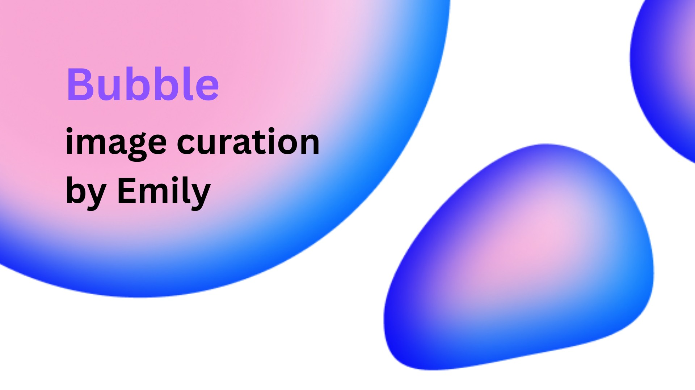
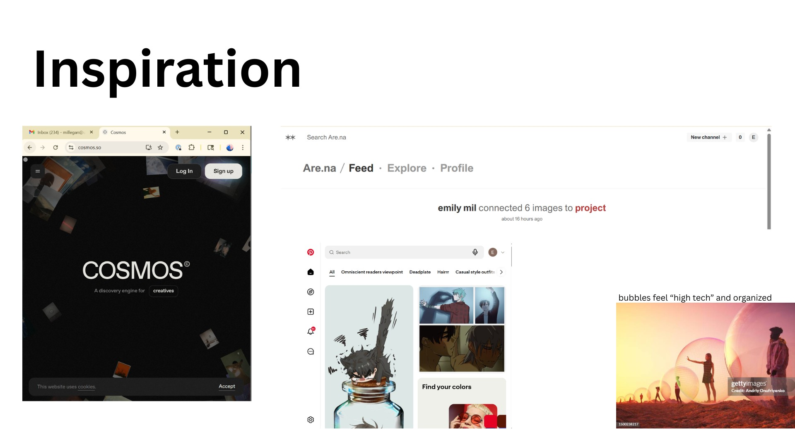
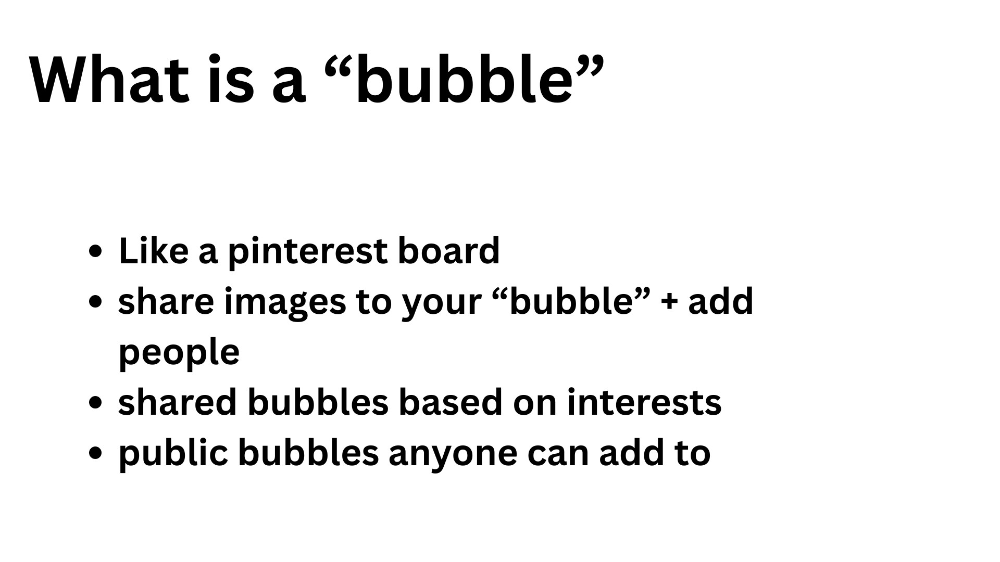
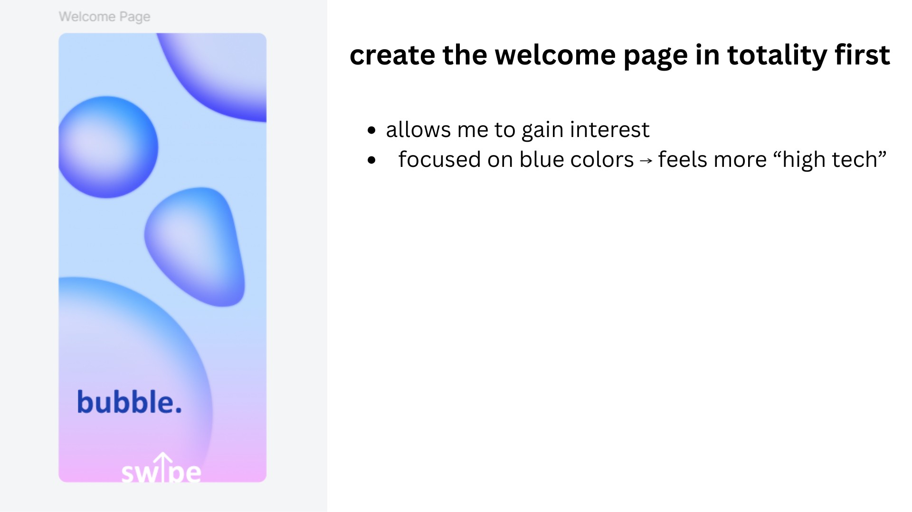
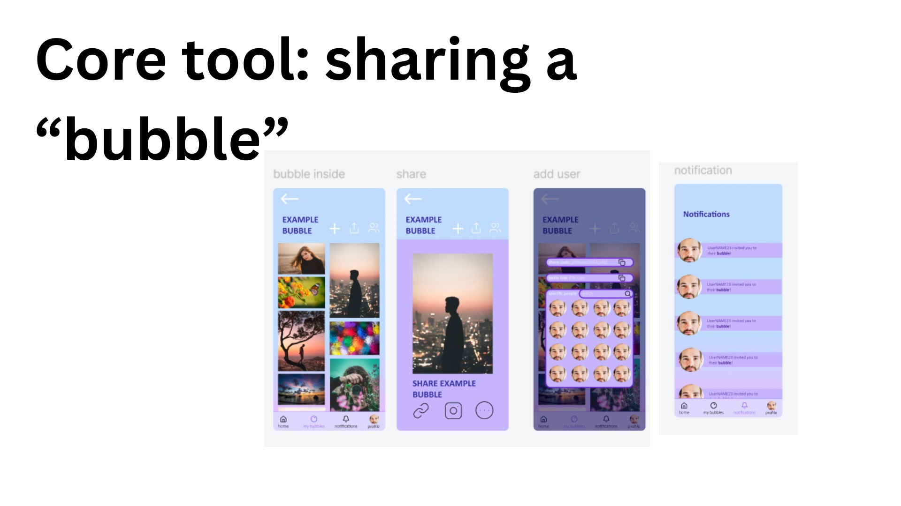
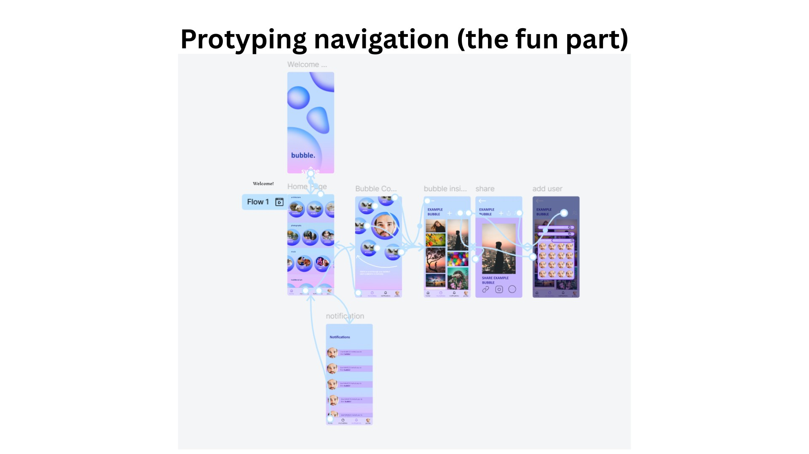
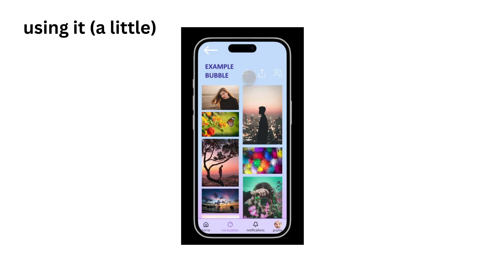

UI / UX design
Bubble.
Make room for inspiration.
Bubble is a visual sharing app concept inspired by the curation and browsing behavior of moodboard platforms. This project focuses much more on the shared nature of content discovery. Each "bubble" is intended to be reminiscent of a 'social' bubble.
Focused on layout hierarchy, discovery patterns, and mobile-first interface design.
SECTION 01 / 07
A shared space for inspiration
Bubble is an image-curation app concept built around collecting and sharing visual references. The opening introduces a soft, dimensional identity for that experience.

SECTION 02 / 07
Looking at existing ways to collect
References from visual-discovery platforms establish the design context. The opportunity is to give collections a more intentional, collaborative feeling.

SECTION 03 / 07
What makes a bubble a bubble?
A bubble is a collection of images that can be personal, shared with invited people, or open to a wider community. This simple organizing unit anchors the rest of the interface.

SECTION 04 / 07
Starting with the first impression
The welcome screen establishes the blue and purple palette, rounded forms, and playful gradients. Building that screen first gives the rest of the app a visual direction.

SECTION 05 / 07
Sharing as the core interaction
The screen sequence follows a collection from browsing to sharing, adding people, and receiving notifications. Collaboration becomes a clear flow rather than a secondary feature.

SECTION 06 / 07
Connecting the screens
The prototype map shows how the individual screens fit together. Mapping navigation makes it easier to think through the steps between discovering an image and sharing a collection.

SECTION 07 / 07
Putting the experience in context
The phone mockup brings the collection view into a familiar device format. It closes the case study with the core experience: a visual space that people can curate together.
